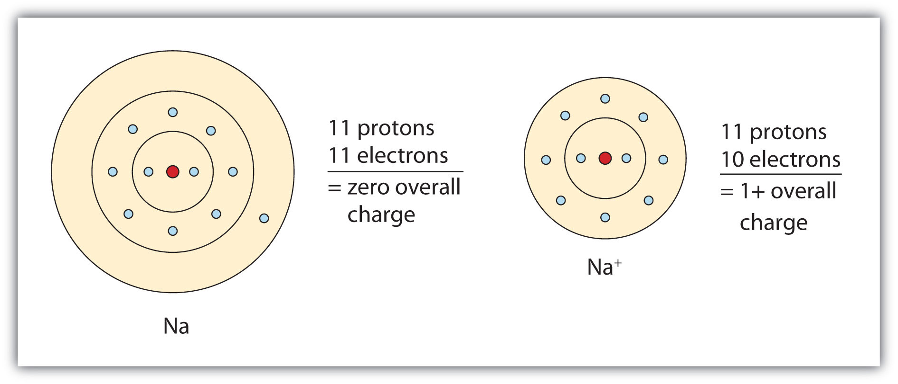
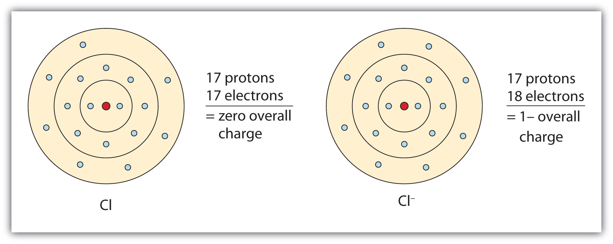
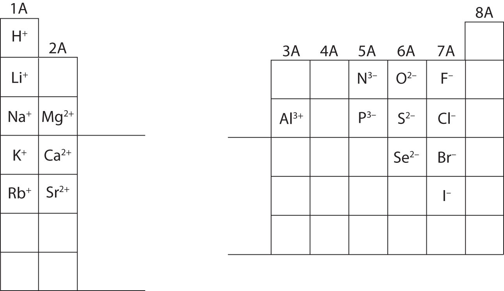
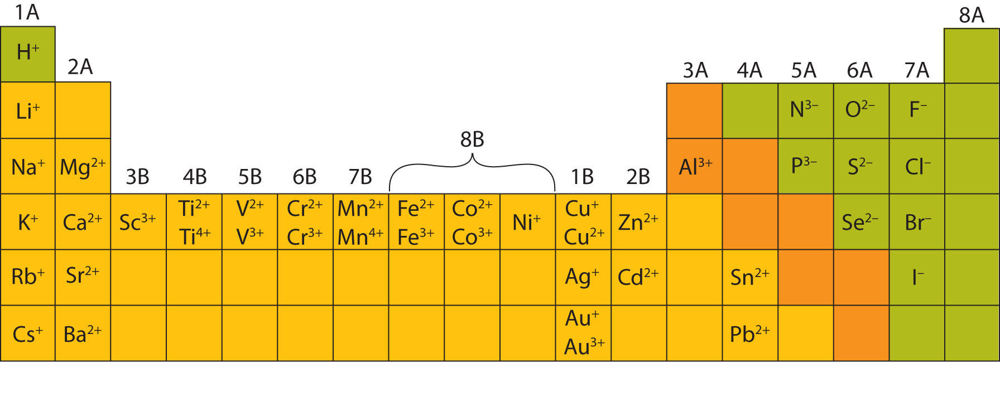

Most atoms do not have eight electrons in their valence electron shell. Some atoms have only a few electrons in their outer shell, while some atoms lack only one or two electrons to have an octet. In cases where an atom has three or fewer valence electrons, the atom may lose those valence electrons quite easily until what remains is a lower shell that contains an octet. Atoms that lose electrons acquire a positive charge as a result because they are left with fewer negatively charged electrons to balance the positive charges of the protons in the nucleus. Positively charged ions are called cationsA positively charged ion.. Most metals become cations when they make ionic compounds.
Some atoms have nearly eight electrons in their valence shell and can gain additional valence electrons until they have an octet. When these atoms gain electrons, they acquire a negative charge because they now possess more electrons than protons. Negatively charged ions are called anionsA negatively charged ion.. Most nonmetals become anions when they make ionic compounds.
The names for positive and negative ions are pronounced CAT-eye-ons and ANN-eye-ons, respectively.
We can use electron configurations to illustrate the electron transfer process between sodium atoms and chlorine atoms. Recall the electron configuration of sodium from Chapter 2 "Elements, Atoms, and the Periodic Table":
Na: 1s22s22p63s1As demonstrated in Example 1 (in Section 3.1 "Two Types of Bonding"), sodium is likely to achieve an octet in its outermost shell by losing its one valence electron. The remaining species has the following electron configuration:
The cation produced in this way, Na+, is called the sodium ion to distinguish it from the element. The outermost shell of the sodium ion is the second electron shell, which has eight electrons in it. The octet rule has been satisfied. Figure 3.1 "The Formation of a Sodium Ion" is a graphical depiction of this process.
Figure 3.1 The Formation of a Sodium Ion
On the left, a sodium atom has 11 electrons. On the right, the sodium ion only has 10 electrons and a 1+ charge.
A chlorine atom has the following electron configuration:
Cl: 1s22s22p63s23p5Only one more electron is needed to achieve an octet in chlorine’s valence shell. (In table salt, this electron comes from the sodium atom.) The electron configuration of the new species that results is as follows:
In this case, the ion has the same outermost shell as the original atom, but now that shell has eight electrons in it. Once again, the octet rule has been satisfied. The resulting anion, Cl−, is called the chloride ion; note the slight change in the suffix (-ide instead of -ine) to create the name of this anion. Figure 3.2 "The Formation of a Chlorine Ion" is a graphical depiction of this process.
Figure 3.2 The Formation of a Chlorine Ion
On the left, the chlorine atom has 17 electrons. On the right, the chloride ion has 18 electrons and has a 1− charge.
With two oppositely charged ions, there is an electrostatic attraction between them because opposite charges attract. The resulting combination is the compound sodium chloride. Notice that there are no leftover electrons. The number of electrons lost by the sodium atom (one) equals the number of electrons gained by the chlorine atom (one), so the compound is electrically neutral. In macroscopic samples of sodium chloride, there are billions and billions of sodium and chloride ions, although there is always the same number of cations and anions.
In many cases, elements that belong to the same group (vertical column) on the periodic table form ions with the same charge because they have the same number of valence electrons. Thus, the periodic table becomes a tool for remembering the charges on many ions. For example, all ions made from alkali metals, the first column on the periodic table, have a 1+ charge. Ions made from alkaline earth metals, the second group on the periodic table, have a 2+ charge. On the other side of the periodic table, the next-to-last column, the halogens, form ions having a 1− charge. Figure 3.3 "Predicting Ionic Charges" shows how the charge on many ions can be predicted by the location of an element on the periodic table. Note the convention of first writing the number and then the sign on a multiply charged ion. The barium cation is written Ba2+, not Ba+2.
Figure 3.3 Predicting Ionic Charges
The charge that an atom acquires when it becomes an ion is related to the structure of the periodic table. Within a group (family) of elements, atoms form ions of a certain charge.
Chemists use simple diagrams to show an atom’s valence electrons and how they transfer. These diagrams have two advantages over the electron shell diagrams introduced in Chapter 2 "Elements, Atoms, and the Periodic Table". First, they show only valence electrons. Second, instead of having a circle around the chemical symbol to represent the electron shell, they have up to eight dots around the symbol; each dot represents a valence electron. These dots are arranged to the right and left and above and below the symbol, with no more than two dots on a side. For example, the representation for sodium is as follows:
and the representation for chlorine is as follows:
It does not matter what sides the dots are placed on in Lewis diagrams as long as each side has a maximum of two dots.
These diagrams are called Lewis electron dot diagrams, or simply Lewis diagramsA representation that shows valence electrons as dots around the chemical symbol of an atom (also called Lewis electron dot diagrams)., after Gilbert N. Lewis, the American chemist who introduced them. Figure 3.4 "Lewis Diagrams of the Elements Lithium through Neon" shows the electron configurations and Lewis diagrams of the elements lithium through neon, which is the entire second period of the periodic table. For the main group elements, the number of valence electrons is the same as the group number listed at the top of the periodic table.
Figure 3.4 Lewis Diagrams of the Elements Lithium through Neon
The transfer of electrons can be illustrated easily with Lewis diagrams:
In representing the final formula, the dots are omitted.
Starting with lithium and bromine atoms, use Lewis diagrams to show the formation of the ionic compound LiBr.
Solution
From the periodic table, we see that lithium is in the same column as sodium, so it will have the same valence shell electron configuration. That means that the neutral lithium atom will have the same Lewis diagram that the sodium atom has. Similarly, bromine is in the same column as chlorine, so it will have the same Lewis diagram that chlorine has. Therefore,
Starting with magnesium and oxygen atoms, use Lewis diagrams to show the formation of the ionic compound MgO.
Some ionic compounds have different numbers of cations and anions. In those cases, electron transfer occurs between more than one atom. For example, here is the formation of MgBr2:
Most of the elements that make ionic compounds form an ion that has a characteristic charge. For example, sodium makes ionic compounds in which the sodium ion always has a 1+ charge. Chlorine makes ionic compounds in which the chloride ion always has a 1− charge. Some elements, especially transition metals, can form ions of multiple charges. Figure 3.5 "Charges of the Monatomic Ions" shows the characteristic charges for some of these ions. As we saw in Figure 3.1 "The Formation of a Sodium Ion", there is a pattern to the charges on many of the main group ions, but there is no simple pattern for transition metal ions (or for the larger main group elements).
Figure 3.5 Charges of the Monatomic Ions
Note that some atoms commonly form ions of different charges.
What are the two types of ions?
Use Lewis diagrams to illustrate the formation of an ionic compound from a potassium atom and an iodine atom.
When the following atoms become ions, what charges do they acquire?
Cations have positive charges, and anions have negative charges.
Identify each as a cation, an anion, or neither.
Identify each as a cation, an anion, or neither.
Write the electron configuration for each ion.
Write the electron configuration for each ion.
Draw Lewis diagrams for the ions listed in Exercise 3. Also include Lewis diagrams for the respective neutral atoms as a comparison.
Draw Lewis diagrams for the ions listed in Exercise 4. Also include Lewis diagrams for the respective neutral atoms as a comparison.
Using Lewis diagrams, show the electron transfer for the formation of LiF.
Using Lewis diagrams, show the electron transfer for the formation of MgO.
Using Lewis diagrams, show the electron transfer for the formation of Li2O.
Using Lewis diagrams, show the electron transfer for the formation of CaF2.
What characteristic charge do atoms in the first column of the periodic table have when they become ions?
What characteristic charge do atoms in the second column of the periodic table have when they become ions?
What characteristic charge do atoms in the third-to-last column of the periodic table have when they become ions?
What characteristic charge do atoms in the next-to-last column of the periodic table have when they become ions?
1+
2−